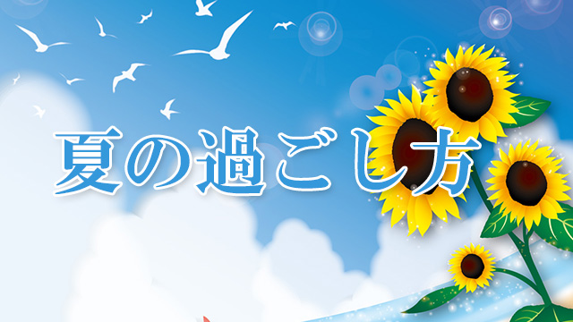

お盆も終わり、大人の皆さんは平常の生活に戻っているであろう今日この頃ですが、皆さんいかがお過ごしでしょうか。今年の夏はどこか行かれましたか？ 私はといえば、結構長い休み期間があったものの、まったく家から出ずに、なんとも地味な時間を過ごしました。あまりにも引きこもり過ぎて、日焼けするどころか逆に肌が白くなる始末です。
そういえば、前回か前々回のブログ（計画を立てる）で書いたギターの練習について。なぜかたくさんの人に読んでいただけたようで、よく「ギターどうですか？」と声をかけられます。
お答えします。計画はあえなく挫折。手慰みにチョコチョコ弾いただけで、目に見えるような成果はほとんど得られませんでした。あれだけ偉そうに「計画の重要性」などと言っていたにもかかわらずこの体たらく。すこししょげております。
しかし、少し言い訳させてください！ ギターよりも大きなことをこの夏実行したのです。それは車を買うこと。
今乗っている車は10万キロ近く走りましたし車検も近いので、そろそろ替え時かなぁ、となんとなく感じていたのですが、夏に買うつもりはありませんでした。にも関わらず…。
何もすることがなく家にいると、ついつい車のサイトを見てしまいますね。刺激のない日常。長い休みの開放感。これらが相まって私を狂わせました。今の車を買ったときも半ば衝動買いでしたが、今回もほぼ衝動買い。お店に行ったのは一度だけ。その場で契約してきました…。
今回買ったのは元々ほしくて目をつけていた車なので後悔はしていません。しかし、状況に大きく動かされて正気を失ってしまう自分の心の弱さにはかなりしょげています。
皆さんも長い休みには気をつけて！
こんな懺悔風に書いていますが、結構幸せです（笑）